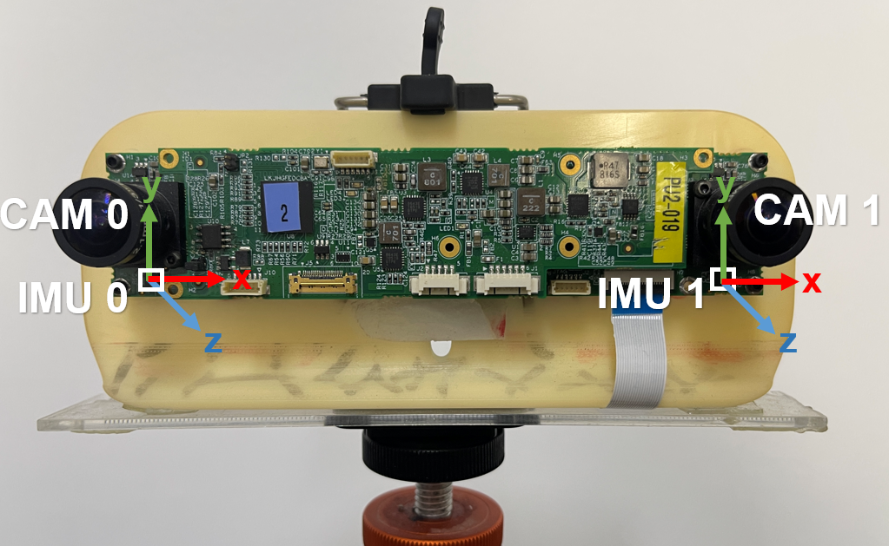

Robotics · SLAM · Autonomous racing
Youwei Yu 于有为
I study autonomous robotic navigation, with a focus on scene reconstruction, SLAM, and sim-to-real autonomy for fast and uneven terrain.
I am advised by Professor Lantao Liu at Indiana University. I also lead state estimation and LiDAR perception for autonomous racing.
youwyu at iu dot edu
Focus
Navigation from reconstruction
Systems
LiDAR, SLAM, racing autonomy
Theme
Simulation that transfers
Learning notes
Notes
What is new
Updates
-
One paper accepted to RSS 2026.
-
One paper accepted to RSS 2025 Workshop ROAR.
-
One paper accepted to International Symposium on Experimental Robotics (ISER) 2025.
-
Story: We pushed the race car to speeds up to nearly 130 mph at the Las Vegas Motor Speedway time trial.
-
One paper accepted to Conference on Robot Learning (CoRL) 2024.
-
Story: Our AI-driven, 1,400-pound race car reached speeds up to nearly 130 mph at the Indy Autonomous Challenge.
-
I started my PhD at Indiana University, advised by Prof. Lantao Liu.
Selected work
Research
RSS 2025 Workshop ROAR
ADEPT: Adaptive Diffusion Environment for Policy Transfer Sim-to-Real
ISER 2025
From Zero to High-Speed Racing: An Autonomous Racing Stack
Autonomous racing
Minimalistic Autonomous Stack for High-Speed Time-Trial Racing
